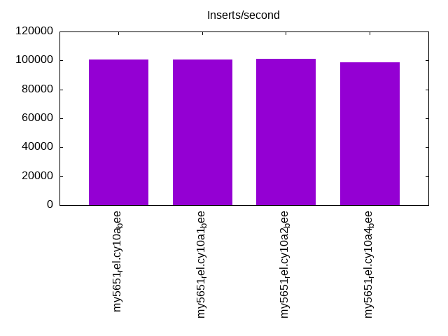
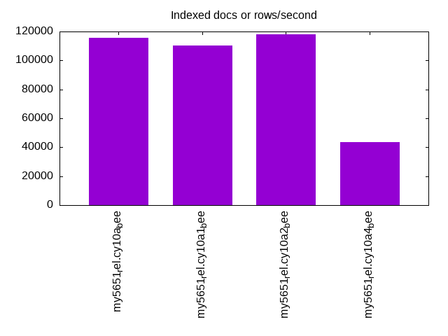
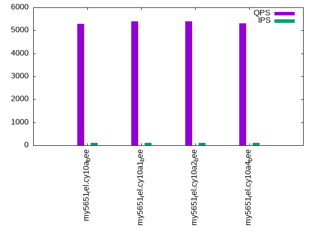
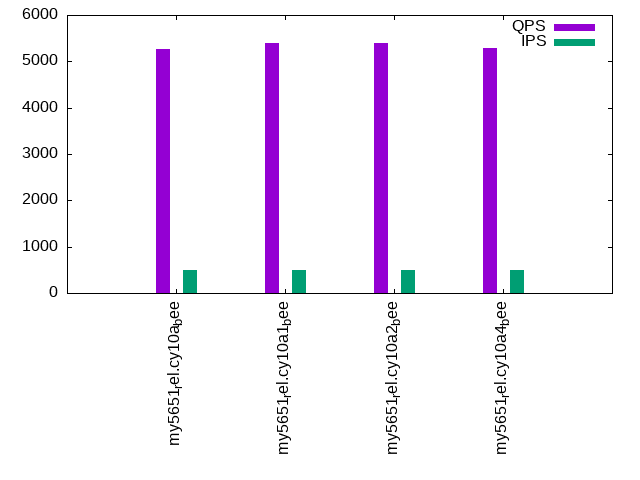

Introduction
This is a report for the insert benchmark with 20M docs and 1 client(s). It is generated by scripts (bash, awk, sed) and Tufte might not be impressed. An overview of the insert benchmark is here and a short update is here. Below, by DBMS, I mean DBMS+version.config. An example is my8020.c10b40 where my means MySQL, 8020 is version 8.0.20 and c10b40 is the name for the configuration file.
The test server has 8 AMD cores, 16G RAM and an NVMe SSD. It is described here as the Beelink. The benchmark was run with 1 client and there were 1 or 3 connections per client (1 for queries or inserts without rate limits, 1+1 for rate limited inserts+deletes). There is 1 table. It loads 20M rows without secondary indexes, creates secondary indexes, then inserts 50M rows with a delete per insert to avoid growing the table. It then does 3 read+write tests for 3600s each that do queries as fast as possible with 100, 500 and then 1000 inserts/second/client concurrent with the queries and 1000 deletes/second to avoid growing the table. The database is (or should be) cached by InnoDB.
The tested DBMS are:
- my5651_rel.cy10a_bee - InnoDB and MySQL 5.6.51, rel build, cy10a_bee config, compiled with CMAKE_BUILD_TYPE=Release, base config
my5651_rel.cy10a2_bee - InnoDB and MySQL 5.6.51, rel build, cy10a2_bee config, compiled with CMAKE_BUILD_TYPE=Release, adds innodb_io_capacity=20k, innodb_io_capacity_max=40k - my5651_rel.cy10a4_bee - InnoDB and MySQL 5.6.51, rel build, cy10a4_bee config, compiled with CMAKE_BUILD_TYPE=Release, adds innodb_flush_method=fsync
Contents
- Summary
- l.i0: load without secondary indexes
- l.x: create secondary indexes
- l.i1: continue load after secondary indexes created
- q100.1: range queries with 100 insert/s per client
- q500.1: range queries with 500 insert/s per client
- q1000.1: range queries with 1000 insert/s per client
Summary
The numbers are inserts/s for l.i0 and l.i1, indexed docs (or rows) /s for l.x and queries/s for q100, q500, q1000. The values are the average rate over the entire test for inserts (IPS) and queries (QPS). The range of values for IPS and QPS is split into 3 parts: bottom 25%, middle 50%, top 25%. Values in the bottom 25% have a red background, values in the top 25% have a green background and values in the middle have no color. A gray background is used for values that can be ignored because the DBMS did not sustain the target insert rate. Red backgrounds are not used when the minimum value is within 80% of the max value.
| dbms | l.i0 | l.x | l.i1 | q100.1 | q500.1 | q1000.1 |
|---|---|---|---|---|---|---|
| my5651_rel.cy10a_bee | 100502 | 115517 | 19936 | 5290 | 5274 | 5292 |
| my5651_rel.cy10a1_bee | 100502 | 110440 | 19889 | 5404 | 5397 | 5400 |
| my5651_rel.cy10a2_bee | 101010 | 118235 | 19810 | 5392 | 5391 | 5456 |
| my5651_rel.cy10a4_bee | 98522 | 43506 | 17135 | 5304 | 5288 | 5242 |
This table has relative throughput, throughput for the DBMS relative to the DBMS in the first line, using the absolute throughput from the previous table. Values less than 0.95 have a yellow background. Values greater than 1.05 have a blue background.
| dbms | l.i0 | l.x | l.i1 | q100.1 | q500.1 | q1000.1 |
|---|---|---|---|---|---|---|
| my5651_rel.cy10a_bee | 1.00 | 1.00 | 1.00 | 1.00 | 1.00 | 1.00 |
| my5651_rel.cy10a1_bee | 1.00 | 0.96 | 1.00 | 1.02 | 1.02 | 1.02 |
| my5651_rel.cy10a2_bee | 1.01 | 1.02 | 0.99 | 1.02 | 1.02 | 1.03 |
| my5651_rel.cy10a4_bee | 0.98 | 0.38 | 0.86 | 1.00 | 1.00 | 0.99 |
This lists the average rate of inserts/s for the tests that do inserts concurrent with queries. For such tests the query rate is listed in the table above. The read+write tests are setup so that the insert rate should match the target rate every second. Cells that are not at least 95% of the target have a red background to indicate a failure to satisfy the target.
| dbms | q100.1 | q500.1 | q1000.1 |
|---|---|---|---|
| my5651_rel.cy10a_bee | 100 | 499 | 998 |
| my5651_rel.cy10a1_bee | 100 | 499 | 998 |
| my5651_rel.cy10a2_bee | 100 | 499 | 998 |
| my5651_rel.cy10a4_bee | 100 | 498 | 996 |
| target | 100 | 500 | 1000 |
l.i0
l.i0: load without secondary indexes. Graphs for performance per 1-second interval are here.
Average throughput:
Insert response time histogram: each cell has the percentage of responses that take <= the time in the header and max is the max response time in seconds. For the max column values in the top 25% of the range have a red background and in the bottom 25% of the range have a green background. The red background is not used when the min value is within 80% of the max value.
| dbms | 256us | 1ms | 4ms | 16ms | 64ms | 256ms | 1s | 4s | 16s | gt | max |
|---|---|---|---|---|---|---|---|---|---|---|---|
| my5651_rel.cy10a_bee | 92.000 | 7.895 | 0.101 | 0.001 | 0.003 | 0.097 | |||||
| my5651_rel.cy10a1_bee | 92.850 | 7.042 | 0.102 | 0.003 | 0.003 | 0.094 | |||||
| my5651_rel.cy10a2_bee | 92.834 | 7.060 | 0.102 | 0.001 | 0.003 | 0.112 | |||||
| my5651_rel.cy10a4_bee | 92.355 | 7.348 | 0.286 | 0.007 | 0.003 | 0.097 |
Performance metrics for the DBMS listed above. Some are normalized by throughput, others are not. Legend for results is here.
ips qps rps rmbps wps wmbps rpq rkbpq wpi wkbpi csps cpups cspq cpupq dbgb1 dbgb2 rss maxop p50 p99 tag 100502 0 879 3.4 52.8 22.9 0.009 0.035 0.001 0.233 11461 21.8 0.114 17 1.3 41.8 2.1 0.097 100890 82384 20m.my5651_rel.cy10a_bee 100502 0 885 3.5 53.2 23.0 0.009 0.035 0.001 0.235 11511 21.9 0.115 17 1.3 41.8 2.1 0.094 101488 88203 20m.my5651_rel.cy10a1_bee 101010 0 884 3.5 53.2 23.0 0.009 0.035 0.001 0.233 11563 21.9 0.114 17 1.3 41.8 2.1 0.112 101493 87604 20m.my5651_rel.cy10a2_bee 98522 0 868 3.4 54.1 22.6 0.009 0.035 0.001 0.235 11324 21.7 0.115 18 1.3 41.8 2.1 0.097 99799 62452 20m.my5651_rel.cy10a4_bee
l.x
l.x: create secondary indexes.
Average throughput:
Performance metrics for the DBMS listed above. Some are normalized by throughput, others are not. Legend for results is here.
ips qps rps rmbps wps wmbps rpq rkbpq wpi wkbpi csps cpups cspq cpupq dbgb1 dbgb2 rss maxop p50 p99 tag 115517 0 19 0.1 1305.5 120.1 0.000 0.001 0.011 1.064 3912 11.6 0.034 8 2.7 43.2 3.5 0.016 NA NA 20m.my5651_rel.cy10a_bee 110440 0 24 0.1 368.0 115.2 0.000 0.001 0.003 1.068 1039 11.1 0.009 8 2.7 43.2 3.5 0.008 NA NA 20m.my5651_rel.cy10a1_bee 118235 0 19 0.1 1325.4 121.8 0.000 0.001 0.011 1.054 4046 11.8 0.034 8 2.7 43.2 3.5 0.011 NA NA 20m.my5651_rel.cy10a2_bee 43506 0 25 0.1 350.2 46.8 0.001 0.002 0.008 1.101 2204 5.6 0.051 10 2.7 43.2 3.5 0.029 NA NA 20m.my5651_rel.cy10a4_bee
l.i1
l.i1: continue load after secondary indexes created. Graphs for performance per 1-second interval are here.
Average throughput:
Insert response time histogram: each cell has the percentage of responses that take <= the time in the header and max is the max response time in seconds. For the max column values in the top 25% of the range have a red background and in the bottom 25% of the range have a green background. The red background is not used when the min value is within 80% of the max value.
| dbms | 256us | 1ms | 4ms | 16ms | 64ms | 256ms | 1s | 4s | 16s | gt | max |
|---|---|---|---|---|---|---|---|---|---|---|---|
| my5651_rel.cy10a_bee | 96.471 | 3.374 | 0.153 | 0.003 | 0.098 | ||||||
| my5651_rel.cy10a1_bee | 96.243 | 3.594 | 0.161 | 0.002 | 0.097 | ||||||
| my5651_rel.cy10a2_bee | 96.180 | 3.653 | 0.166 | 0.002 | 0.101 | ||||||
| my5651_rel.cy10a4_bee | 93.384 | 5.652 | 0.963 | 0.001 | nonzero | 0.571 |
Delete response time histogram: each cell has the percentage of responses that take <= the time in the header and max is the max response time in seconds. For the max column values in the top 25% of the range have a red background and in the bottom 25% of the range have a green background. The red background is not used when the min value is within 80% of the max value.
| dbms | 256us | 1ms | 4ms | 16ms | 64ms | 256ms | 1s | 4s | 16s | gt | max |
|---|---|---|---|---|---|---|---|---|---|---|---|
| my5651_rel.cy10a_bee | 97.512 | 2.372 | 0.114 | 0.003 | 0.076 | ||||||
| my5651_rel.cy10a1_bee | 97.215 | 2.661 | 0.122 | 0.002 | 0.084 | ||||||
| my5651_rel.cy10a2_bee | 97.268 | 2.603 | 0.127 | 0.002 | 0.077 | ||||||
| my5651_rel.cy10a4_bee | 95.864 | 3.721 | 0.415 | 0.001 | 0.156 |
Performance metrics for the DBMS listed above. Some are normalized by throughput, others are not. Legend for results is here.
ips qps rps rmbps wps wmbps rpq rkbpq wpi wkbpi csps cpups cspq cpupq dbgb1 dbgb2 rss maxop p50 p99 tag 19936 0 670 2.6 980.1 54.7 0.034 0.134 0.049 2.809 14090 34.4 0.707 138 3.8 44.3 4.5 0.098 21276 4997 20m.my5651_rel.cy10a_bee 19889 0 670 2.6 844.7 54.5 0.034 0.135 0.042 2.808 12914 34.3 0.649 138 3.8 44.3 4.5 0.097 21226 4894 20m.my5651_rel.cy10a1_bee 19810 0 666 2.6 1132.4 59.2 0.034 0.134 0.057 3.059 14530 34.3 0.733 139 3.8 44.3 4.5 0.101 21034 4945 20m.my5651_rel.cy10a2_bee 17135 0 574 2.2 781.9 47.9 0.033 0.134 0.046 2.860 11533 30.8 0.673 144 3.8 44.3 4.5 0.571 17588 4994 20m.my5651_rel.cy10a4_bee
q100.1
q100.1: range queries with 100 insert/s per client. Graphs for performance per 1-second interval are here.
Average throughput:
Query response time histogram: each cell has the percentage of responses that take <= the time in the header and max is the max response time in seconds. For max values in the top 25% of the range have a red background and in the bottom 25% of the range have a green background. The red background is not used when the min value is within 80% of the max value.
| dbms | 256us | 1ms | 4ms | 16ms | 64ms | 256ms | 1s | 4s | 16s | gt | max |
|---|---|---|---|---|---|---|---|---|---|---|---|
| my5651_rel.cy10a_bee | 94.942 | 5.052 | 0.002 | 0.003 | nonzero | 0.016 | |||||
| my5651_rel.cy10a1_bee | 95.529 | 4.465 | 0.002 | 0.004 | 0.016 | ||||||
| my5651_rel.cy10a2_bee | 95.459 | 4.536 | 0.002 | 0.003 | nonzero | 0.023 | |||||
| my5651_rel.cy10a4_bee | 95.024 | 4.969 | 0.003 | 0.005 | nonzero | 0.022 |
Insert response time histogram: each cell has the percentage of responses that take <= the time in the header and max is the max response time in seconds. For max values in the top 25% of the range have a red background and in the bottom 25% of the range have a green background. The red background is not used when the min value is within 80% of the max value.
| dbms | 256us | 1ms | 4ms | 16ms | 64ms | 256ms | 1s | 4s | 16s | gt | max |
|---|---|---|---|---|---|---|---|---|---|---|---|
| my5651_rel.cy10a_bee | 52.278 | 46.847 | 0.875 | 0.026 | |||||||
| my5651_rel.cy10a1_bee | 55.625 | 43.875 | 0.500 | 0.023 | |||||||
| my5651_rel.cy10a2_bee | 50.375 | 48.222 | 1.403 | 0.031 | |||||||
| my5651_rel.cy10a4_bee | 61.681 | 37.653 | 0.667 | 0.038 |
Delete response time histogram: each cell has the percentage of responses that take <= the time in the header and max is the max response time in seconds. For max values in the top 25% of the range have a red background and in the bottom 25% of the range have a green background. The red background is not used when the min value is within 80% of the max value.
| dbms | 256us | 1ms | 4ms | 16ms | 64ms | 256ms | 1s | 4s | 16s | gt | max |
|---|---|---|---|---|---|---|---|---|---|---|---|
| my5651_rel.cy10a_bee | 53.806 | 45.819 | 0.375 | 0.024 | |||||||
| my5651_rel.cy10a1_bee | 56.028 | 43.847 | 0.125 | 0.021 | |||||||
| my5651_rel.cy10a2_bee | 51.264 | 48.014 | 0.722 | 0.031 | |||||||
| my5651_rel.cy10a4_bee | 80.431 | 19.333 | 0.236 | 0.028 |
Performance metrics for the DBMS listed above. Some are normalized by throughput, others are not. Legend for results is here.
ips qps rps rmbps wps wmbps rpq rkbpq wpi wkbpi csps cpups cspq cpupq dbgb1 dbgb2 rss maxop p50 p99 tag 100 5290 4 0.0 692.0 20.8 0.001 0.003 6.941 213.223 22694 13.1 4.290 198 3.8 44.3 4.5 0.016 5243 5066 20m.my5651_rel.cy10a_bee 100 5404 4 0.0 153.6 4.8 0.001 0.003 1.539 49.594 21101 12.9 3.905 191 3.8 44.3 4.5 0.016 5354 5178 20m.my5651_rel.cy10a1_bee 100 5392 4 0.0 709.0 21.2 0.001 0.003 7.111 218.218 23169 13.1 4.297 194 3.8 44.3 4.5 0.023 5354 5178 20m.my5651_rel.cy10a2_bee 100 5304 4 0.0 234.4 6.7 0.001 0.003 2.353 68.767 21041 13.2 3.967 199 3.8 44.3 4.5 0.022 5273 5097 20m.my5651_rel.cy10a4_bee
q500.1
q500.1: range queries with 500 insert/s per client. Graphs for performance per 1-second interval are here.
Average throughput:
Query response time histogram: each cell has the percentage of responses that take <= the time in the header and max is the max response time in seconds. For max values in the top 25% of the range have a red background and in the bottom 25% of the range have a green background. The red background is not used when the min value is within 80% of the max value.
| dbms | 256us | 1ms | 4ms | 16ms | 64ms | 256ms | 1s | 4s | 16s | gt | max |
|---|---|---|---|---|---|---|---|---|---|---|---|
| my5651_rel.cy10a_bee | 94.872 | 5.123 | 0.002 | 0.003 | 0.010 | ||||||
| my5651_rel.cy10a1_bee | 95.512 | 4.484 | 0.001 | 0.003 | 0.010 | ||||||
| my5651_rel.cy10a2_bee | 95.369 | 4.625 | 0.004 | 0.002 | nonzero | 0.024 | |||||
| my5651_rel.cy10a4_bee | 94.974 | 5.022 | 0.001 | 0.003 | 0.011 |
Insert response time histogram: each cell has the percentage of responses that take <= the time in the header and max is the max response time in seconds. For max values in the top 25% of the range have a red background and in the bottom 25% of the range have a green background. The red background is not used when the min value is within 80% of the max value.
| dbms | 256us | 1ms | 4ms | 16ms | 64ms | 256ms | 1s | 4s | 16s | gt | max |
|---|---|---|---|---|---|---|---|---|---|---|---|
| my5651_rel.cy10a_bee | 90.283 | 9.639 | 0.078 | 0.041 | |||||||
| my5651_rel.cy10a1_bee | 90.456 | 9.467 | 0.078 | 0.040 | |||||||
| my5651_rel.cy10a2_bee | 85.678 | 14.056 | 0.267 | 0.042 | |||||||
| my5651_rel.cy10a4_bee | 90.408 | 9.517 | 0.075 | 0.042 |
Delete response time histogram: each cell has the percentage of responses that take <= the time in the header and max is the max response time in seconds. For max values in the top 25% of the range have a red background and in the bottom 25% of the range have a green background. The red background is not used when the min value is within 80% of the max value.
| dbms | 256us | 1ms | 4ms | 16ms | 64ms | 256ms | 1s | 4s | 16s | gt | max |
|---|---|---|---|---|---|---|---|---|---|---|---|
| my5651_rel.cy10a_bee | 90.528 | 9.447 | 0.025 | 0.021 | |||||||
| my5651_rel.cy10a1_bee | 90.572 | 9.397 | 0.031 | 0.018 | |||||||
| my5651_rel.cy10a2_bee | 88.489 | 11.344 | 0.167 | 0.038 | |||||||
| my5651_rel.cy10a4_bee | 90.517 | 9.464 | 0.019 | 0.022 |
Performance metrics for the DBMS listed above. Some are normalized by throughput, others are not. Legend for results is here.
ips qps rps rmbps wps wmbps rpq rkbpq wpi wkbpi csps cpups cspq cpupq dbgb1 dbgb2 rss maxop p50 p99 tag 499 5274 17 0.1 49.3 1.9 0.003 0.013 0.099 3.985 20666 13.3 3.919 202 3.8 44.3 4.5 0.010 5229 5065 20m.my5651_rel.cy10a_bee 499 5397 17 0.1 2.8 0.5 0.003 0.012 0.006 1.105 20943 13.3 3.880 197 3.8 44.3 4.5 0.010 5354 5178 20m.my5651_rel.cy10a1_bee 499 5391 17 0.1 2103.2 63.8 0.003 0.012 4.217 131.060 28066 14.2 5.206 211 3.8 44.3 4.5 0.024 5353 5177 20m.my5651_rel.cy10a2_bee 498 5288 16 0.1 4.7 0.6 0.003 0.013 0.010 1.229 20593 13.4 3.894 203 3.8 44.3 4.5 0.011 5258 5082 20m.my5651_rel.cy10a4_bee
q1000.1
q1000.1: range queries with 1000 insert/s per client. Graphs for performance per 1-second interval are here.
Average throughput:

Query response time histogram: each cell has the percentage of responses that take <= the time in the header and max is the max response time in seconds. For max values in the top 25% of the range have a red background and in the bottom 25% of the range have a green background. The red background is not used when the min value is within 80% of the max value.
| dbms | 256us | 1ms | 4ms | 16ms | 64ms | 256ms | 1s | 4s | 16s | gt | max |
|---|---|---|---|---|---|---|---|---|---|---|---|
| my5651_rel.cy10a_bee | 94.613 | 5.381 | 0.003 | 0.003 | nonzero | 0.017 | |||||
| my5651_rel.cy10a1_bee | 95.305 | 4.687 | 0.004 | 0.003 | nonzero | 0.019 | |||||
| my5651_rel.cy10a2_bee | 95.409 | 4.580 | 0.007 | 0.003 | nonzero | 0.017 | |||||
| my5651_rel.cy10a4_bee | 94.489 | 5.495 | 0.005 | 0.012 | nonzero | 0.028 |
Insert response time histogram: each cell has the percentage of responses that take <= the time in the header and max is the max response time in seconds. For max values in the top 25% of the range have a red background and in the bottom 25% of the range have a green background. The red background is not used when the min value is within 80% of the max value.
| dbms | 256us | 1ms | 4ms | 16ms | 64ms | 256ms | 1s | 4s | 16s | gt | max |
|---|---|---|---|---|---|---|---|---|---|---|---|
| my5651_rel.cy10a_bee | 92.889 | 7.017 | 0.094 | 0.041 | |||||||
| my5651_rel.cy10a1_bee | 92.224 | 7.700 | 0.076 | 0.050 | |||||||
| my5651_rel.cy10a2_bee | 88.418 | 11.410 | 0.172 | 0.040 | |||||||
| my5651_rel.cy10a4_bee | 90.519 | 8.782 | 0.699 | 0.063 |
Delete response time histogram: each cell has the percentage of responses that take <= the time in the header and max is the max response time in seconds. For max values in the top 25% of the range have a red background and in the bottom 25% of the range have a green background. The red background is not used when the min value is within 80% of the max value.
| dbms | 256us | 1ms | 4ms | 16ms | 64ms | 256ms | 1s | 4s | 16s | gt | max |
|---|---|---|---|---|---|---|---|---|---|---|---|
| my5651_rel.cy10a_bee | 93.389 | 6.569 | 0.042 | 0.022 | |||||||
| my5651_rel.cy10a1_bee | 92.910 | 7.049 | 0.042 | 0.050 | |||||||
| my5651_rel.cy10a2_bee | 89.940 | 9.949 | 0.111 | 0.041 | |||||||
| my5651_rel.cy10a4_bee | 92.356 | 7.339 | 0.306 | 0.061 |
Performance metrics for the DBMS listed above. Some are normalized by throughput, others are not. Legend for results is here.
ips qps rps rmbps wps wmbps rpq rkbpq wpi wkbpi csps cpups cspq cpupq dbgb1 dbgb2 rss maxop p50 p99 tag 998 5292 33 0.1 398.1 12.9 0.006 0.025 0.399 13.241 22110 14.5 4.178 219 3.8 44.3 4.5 0.017 5242 5051 20m.my5651_rel.cy10a_bee 998 5400 33 0.1 652.9 21.0 0.006 0.024 0.654 21.575 22456 14.7 4.159 218 3.8 44.3 4.5 0.019 5354 5147 20m.my5651_rel.cy10a1_bee 998 5456 33 0.1 2754.9 84.0 0.006 0.024 2.761 86.213 30686 15.4 5.625 226 3.8 44.3 4.5 0.017 5404 5193 20m.my5651_rel.cy10a2_bee 996 5242 33 0.1 221.3 7.7 0.006 0.025 0.222 7.883 21103 14.5 4.026 221 3.8 44.3 4.5 0.028 5213 4877 20m.my5651_rel.cy10a4_bee
l.i0
l.i0: load without secondary indexes
Performance metrics for all DBMS, not just the ones listed above. Some are normalized by throughput, others are not. Legend for results is here.
ips qps rps rmbps wps wmbps rpq rkbpq wpi wkbpi csps cpups cspq cpupq dbgb1 dbgb2 rss maxop p50 p99 tag 100502 0 879 3.4 52.8 22.9 0.009 0.035 0.001 0.233 11461 21.8 0.114 17 1.3 41.8 2.1 0.097 100890 82384 20m.my5651_rel.cy10a_bee 100502 0 885 3.5 53.2 23.0 0.009 0.035 0.001 0.235 11511 21.9 0.115 17 1.3 41.8 2.1 0.094 101488 88203 20m.my5651_rel.cy10a1_bee 101010 0 884 3.5 53.2 23.0 0.009 0.035 0.001 0.233 11563 21.9 0.114 17 1.3 41.8 2.1 0.112 101493 87604 20m.my5651_rel.cy10a2_bee 98522 0 868 3.4 54.1 22.6 0.009 0.035 0.001 0.235 11324 21.7 0.115 18 1.3 41.8 2.1 0.097 99799 62452 20m.my5651_rel.cy10a4_bee
l.x
l.x: create secondary indexes
Performance metrics for all DBMS, not just the ones listed above. Some are normalized by throughput, others are not. Legend for results is here.
ips qps rps rmbps wps wmbps rpq rkbpq wpi wkbpi csps cpups cspq cpupq dbgb1 dbgb2 rss maxop p50 p99 tag 115517 0 19 0.1 1305.5 120.1 0.000 0.001 0.011 1.064 3912 11.6 0.034 8 2.7 43.2 3.5 0.016 NA NA 20m.my5651_rel.cy10a_bee 110440 0 24 0.1 368.0 115.2 0.000 0.001 0.003 1.068 1039 11.1 0.009 8 2.7 43.2 3.5 0.008 NA NA 20m.my5651_rel.cy10a1_bee 118235 0 19 0.1 1325.4 121.8 0.000 0.001 0.011 1.054 4046 11.8 0.034 8 2.7 43.2 3.5 0.011 NA NA 20m.my5651_rel.cy10a2_bee 43506 0 25 0.1 350.2 46.8 0.001 0.002 0.008 1.101 2204 5.6 0.051 10 2.7 43.2 3.5 0.029 NA NA 20m.my5651_rel.cy10a4_bee
l.i1
l.i1: continue load after secondary indexes created
Performance metrics for all DBMS, not just the ones listed above. Some are normalized by throughput, others are not. Legend for results is here.
ips qps rps rmbps wps wmbps rpq rkbpq wpi wkbpi csps cpups cspq cpupq dbgb1 dbgb2 rss maxop p50 p99 tag 19936 0 670 2.6 980.1 54.7 0.034 0.134 0.049 2.809 14090 34.4 0.707 138 3.8 44.3 4.5 0.098 21276 4997 20m.my5651_rel.cy10a_bee 19889 0 670 2.6 844.7 54.5 0.034 0.135 0.042 2.808 12914 34.3 0.649 138 3.8 44.3 4.5 0.097 21226 4894 20m.my5651_rel.cy10a1_bee 19810 0 666 2.6 1132.4 59.2 0.034 0.134 0.057 3.059 14530 34.3 0.733 139 3.8 44.3 4.5 0.101 21034 4945 20m.my5651_rel.cy10a2_bee 17135 0 574 2.2 781.9 47.9 0.033 0.134 0.046 2.860 11533 30.8 0.673 144 3.8 44.3 4.5 0.571 17588 4994 20m.my5651_rel.cy10a4_bee
q100.1
q100.1: range queries with 100 insert/s per client
Performance metrics for all DBMS, not just the ones listed above. Some are normalized by throughput, others are not. Legend for results is here.
ips qps rps rmbps wps wmbps rpq rkbpq wpi wkbpi csps cpups cspq cpupq dbgb1 dbgb2 rss maxop p50 p99 tag 100 5290 4 0.0 692.0 20.8 0.001 0.003 6.941 213.223 22694 13.1 4.290 198 3.8 44.3 4.5 0.016 5243 5066 20m.my5651_rel.cy10a_bee 100 5404 4 0.0 153.6 4.8 0.001 0.003 1.539 49.594 21101 12.9 3.905 191 3.8 44.3 4.5 0.016 5354 5178 20m.my5651_rel.cy10a1_bee 100 5392 4 0.0 709.0 21.2 0.001 0.003 7.111 218.218 23169 13.1 4.297 194 3.8 44.3 4.5 0.023 5354 5178 20m.my5651_rel.cy10a2_bee 100 5304 4 0.0 234.4 6.7 0.001 0.003 2.353 68.767 21041 13.2 3.967 199 3.8 44.3 4.5 0.022 5273 5097 20m.my5651_rel.cy10a4_bee
q500.1
q500.1: range queries with 500 insert/s per client
Performance metrics for all DBMS, not just the ones listed above. Some are normalized by throughput, others are not. Legend for results is here.
ips qps rps rmbps wps wmbps rpq rkbpq wpi wkbpi csps cpups cspq cpupq dbgb1 dbgb2 rss maxop p50 p99 tag 499 5274 17 0.1 49.3 1.9 0.003 0.013 0.099 3.985 20666 13.3 3.919 202 3.8 44.3 4.5 0.010 5229 5065 20m.my5651_rel.cy10a_bee 499 5397 17 0.1 2.8 0.5 0.003 0.012 0.006 1.105 20943 13.3 3.880 197 3.8 44.3 4.5 0.010 5354 5178 20m.my5651_rel.cy10a1_bee 499 5391 17 0.1 2103.2 63.8 0.003 0.012 4.217 131.060 28066 14.2 5.206 211 3.8 44.3 4.5 0.024 5353 5177 20m.my5651_rel.cy10a2_bee 498 5288 16 0.1 4.7 0.6 0.003 0.013 0.010 1.229 20593 13.4 3.894 203 3.8 44.3 4.5 0.011 5258 5082 20m.my5651_rel.cy10a4_bee
q1000.1
q1000.1: range queries with 1000 insert/s per client
Performance metrics for all DBMS, not just the ones listed above. Some are normalized by throughput, others are not. Legend for results is here.
ips qps rps rmbps wps wmbps rpq rkbpq wpi wkbpi csps cpups cspq cpupq dbgb1 dbgb2 rss maxop p50 p99 tag 998 5292 33 0.1 398.1 12.9 0.006 0.025 0.399 13.241 22110 14.5 4.178 219 3.8 44.3 4.5 0.017 5242 5051 20m.my5651_rel.cy10a_bee 998 5400 33 0.1 652.9 21.0 0.006 0.024 0.654 21.575 22456 14.7 4.159 218 3.8 44.3 4.5 0.019 5354 5147 20m.my5651_rel.cy10a1_bee 998 5456 33 0.1 2754.9 84.0 0.006 0.024 2.761 86.213 30686 15.4 5.625 226 3.8 44.3 4.5 0.017 5404 5193 20m.my5651_rel.cy10a2_bee 996 5242 33 0.1 221.3 7.7 0.006 0.025 0.222 7.883 21103 14.5 4.026 221 3.8 44.3 4.5 0.028 5213 4877 20m.my5651_rel.cy10a4_bee
l.i0
- l.i0: load without secondary indexes
- Legend for results is here.
- Each entry lists the percentage of responses that fit in that bucket (slower than max time for previous bucket, faster than min time for next bucket).
Insert response time histogram
256us 1ms 4ms 16ms 64ms 256ms 1s 4s 16s gt max tag 0.000 92.000 7.895 0.101 0.001 0.003 0.000 0.000 0.000 0.000 0.097 my5651_rel.cy10a_bee 0.000 92.850 7.042 0.102 0.003 0.003 0.000 0.000 0.000 0.000 0.094 my5651_rel.cy10a1_bee 0.000 92.834 7.060 0.102 0.001 0.003 0.000 0.000 0.000 0.000 0.112 my5651_rel.cy10a2_bee 0.000 92.355 7.348 0.286 0.007 0.003 0.000 0.000 0.000 0.000 0.097 my5651_rel.cy10a4_bee
l.x
- l.x: create secondary indexes
- Legend for results is here.
- Each entry lists the percentage of responses that fit in that bucket (slower than max time for previous bucket, faster than min time for next bucket).
TODO - determine whether there is data for create index response time
l.i1
- l.i1: continue load after secondary indexes created
- Legend for results is here.
- Each entry lists the percentage of responses that fit in that bucket (slower than max time for previous bucket, faster than min time for next bucket).
Insert response time histogram
256us 1ms 4ms 16ms 64ms 256ms 1s 4s 16s gt max tag 0.000 0.000 96.471 3.374 0.153 0.003 0.000 0.000 0.000 0.000 0.098 my5651_rel.cy10a_bee 0.000 0.000 96.243 3.594 0.161 0.002 0.000 0.000 0.000 0.000 0.097 my5651_rel.cy10a1_bee 0.000 0.000 96.180 3.653 0.166 0.002 0.000 0.000 0.000 0.000 0.101 my5651_rel.cy10a2_bee 0.000 0.000 93.384 5.652 0.963 0.001 nonzero 0.000 0.000 0.000 0.571 my5651_rel.cy10a4_bee
Delete response time histogram
256us 1ms 4ms 16ms 64ms 256ms 1s 4s 16s gt max tag 0.000 0.000 97.512 2.372 0.114 0.003 0.000 0.000 0.000 0.000 0.076 my5651_rel.cy10a_bee 0.000 0.000 97.215 2.661 0.122 0.002 0.000 0.000 0.000 0.000 0.084 my5651_rel.cy10a1_bee 0.000 0.000 97.268 2.603 0.127 0.002 0.000 0.000 0.000 0.000 0.077 my5651_rel.cy10a2_bee 0.000 0.000 95.864 3.721 0.415 0.001 0.000 0.000 0.000 0.000 0.156 my5651_rel.cy10a4_bee
q100.1
- q100.1: range queries with 100 insert/s per client
- Legend for results is here.
- Each entry lists the percentage of responses that fit in that bucket (slower than max time for previous bucket, faster than min time for next bucket).
Query response time histogram
256us 1ms 4ms 16ms 64ms 256ms 1s 4s 16s gt max tag 94.942 5.052 0.002 0.003 nonzero 0.000 0.000 0.000 0.000 0.000 0.016 my5651_rel.cy10a_bee 95.529 4.465 0.002 0.004 0.000 0.000 0.000 0.000 0.000 0.000 0.016 my5651_rel.cy10a1_bee 95.459 4.536 0.002 0.003 nonzero 0.000 0.000 0.000 0.000 0.000 0.023 my5651_rel.cy10a2_bee 95.024 4.969 0.003 0.005 nonzero 0.000 0.000 0.000 0.000 0.000 0.022 my5651_rel.cy10a4_bee
Insert response time histogram
256us 1ms 4ms 16ms 64ms 256ms 1s 4s 16s gt max tag 0.000 0.000 52.278 46.847 0.875 0.000 0.000 0.000 0.000 0.000 0.026 my5651_rel.cy10a_bee 0.000 0.000 55.625 43.875 0.500 0.000 0.000 0.000 0.000 0.000 0.023 my5651_rel.cy10a1_bee 0.000 0.000 50.375 48.222 1.403 0.000 0.000 0.000 0.000 0.000 0.031 my5651_rel.cy10a2_bee 0.000 0.000 61.681 37.653 0.667 0.000 0.000 0.000 0.000 0.000 0.038 my5651_rel.cy10a4_bee
Delete response time histogram
256us 1ms 4ms 16ms 64ms 256ms 1s 4s 16s gt max tag 0.000 0.000 53.806 45.819 0.375 0.000 0.000 0.000 0.000 0.000 0.024 my5651_rel.cy10a_bee 0.000 0.000 56.028 43.847 0.125 0.000 0.000 0.000 0.000 0.000 0.021 my5651_rel.cy10a1_bee 0.000 0.000 51.264 48.014 0.722 0.000 0.000 0.000 0.000 0.000 0.031 my5651_rel.cy10a2_bee 0.000 0.000 80.431 19.333 0.236 0.000 0.000 0.000 0.000 0.000 0.028 my5651_rel.cy10a4_bee
q500.1
- q500.1: range queries with 500 insert/s per client
- Legend for results is here.
- Each entry lists the percentage of responses that fit in that bucket (slower than max time for previous bucket, faster than min time for next bucket).
Query response time histogram
256us 1ms 4ms 16ms 64ms 256ms 1s 4s 16s gt max tag 94.872 5.123 0.002 0.003 0.000 0.000 0.000 0.000 0.000 0.000 0.010 my5651_rel.cy10a_bee 95.512 4.484 0.001 0.003 0.000 0.000 0.000 0.000 0.000 0.000 0.010 my5651_rel.cy10a1_bee 95.369 4.625 0.004 0.002 nonzero 0.000 0.000 0.000 0.000 0.000 0.024 my5651_rel.cy10a2_bee 94.974 5.022 0.001 0.003 0.000 0.000 0.000 0.000 0.000 0.000 0.011 my5651_rel.cy10a4_bee
Insert response time histogram
256us 1ms 4ms 16ms 64ms 256ms 1s 4s 16s gt max tag 0.000 0.000 90.283 9.639 0.078 0.000 0.000 0.000 0.000 0.000 0.041 my5651_rel.cy10a_bee 0.000 0.000 90.456 9.467 0.078 0.000 0.000 0.000 0.000 0.000 0.040 my5651_rel.cy10a1_bee 0.000 0.000 85.678 14.056 0.267 0.000 0.000 0.000 0.000 0.000 0.042 my5651_rel.cy10a2_bee 0.000 0.000 90.408 9.517 0.075 0.000 0.000 0.000 0.000 0.000 0.042 my5651_rel.cy10a4_bee
Delete response time histogram
256us 1ms 4ms 16ms 64ms 256ms 1s 4s 16s gt max tag 0.000 0.000 90.528 9.447 0.025 0.000 0.000 0.000 0.000 0.000 0.021 my5651_rel.cy10a_bee 0.000 0.000 90.572 9.397 0.031 0.000 0.000 0.000 0.000 0.000 0.018 my5651_rel.cy10a1_bee 0.000 0.000 88.489 11.344 0.167 0.000 0.000 0.000 0.000 0.000 0.038 my5651_rel.cy10a2_bee 0.000 0.000 90.517 9.464 0.019 0.000 0.000 0.000 0.000 0.000 0.022 my5651_rel.cy10a4_bee
q1000.1
- q1000.1: range queries with 1000 insert/s per client
- Legend for results is here.
- Each entry lists the percentage of responses that fit in that bucket (slower than max time for previous bucket, faster than min time for next bucket).
Query response time histogram
256us 1ms 4ms 16ms 64ms 256ms 1s 4s 16s gt max tag 94.613 5.381 0.003 0.003 nonzero 0.000 0.000 0.000 0.000 0.000 0.017 my5651_rel.cy10a_bee 95.305 4.687 0.004 0.003 nonzero 0.000 0.000 0.000 0.000 0.000 0.019 my5651_rel.cy10a1_bee 95.409 4.580 0.007 0.003 nonzero 0.000 0.000 0.000 0.000 0.000 0.017 my5651_rel.cy10a2_bee 94.489 5.495 0.005 0.012 nonzero 0.000 0.000 0.000 0.000 0.000 0.028 my5651_rel.cy10a4_bee
Insert response time histogram
256us 1ms 4ms 16ms 64ms 256ms 1s 4s 16s gt max tag 0.000 0.000 92.889 7.017 0.094 0.000 0.000 0.000 0.000 0.000 0.041 my5651_rel.cy10a_bee 0.000 0.000 92.224 7.700 0.076 0.000 0.000 0.000 0.000 0.000 0.050 my5651_rel.cy10a1_bee 0.000 0.000 88.418 11.410 0.172 0.000 0.000 0.000 0.000 0.000 0.040 my5651_rel.cy10a2_bee 0.000 0.000 90.519 8.782 0.699 0.000 0.000 0.000 0.000 0.000 0.063 my5651_rel.cy10a4_bee
Delete response time histogram
256us 1ms 4ms 16ms 64ms 256ms 1s 4s 16s gt max tag 0.000 0.000 93.389 6.569 0.042 0.000 0.000 0.000 0.000 0.000 0.022 my5651_rel.cy10a_bee 0.000 0.000 92.910 7.049 0.042 0.000 0.000 0.000 0.000 0.000 0.050 my5651_rel.cy10a1_bee 0.000 0.000 89.940 9.949 0.111 0.000 0.000 0.000 0.000 0.000 0.041 my5651_rel.cy10a2_bee 0.000 0.000 92.356 7.339 0.306 0.000 0.000 0.000 0.000 0.000 0.061 my5651_rel.cy10a4_bee